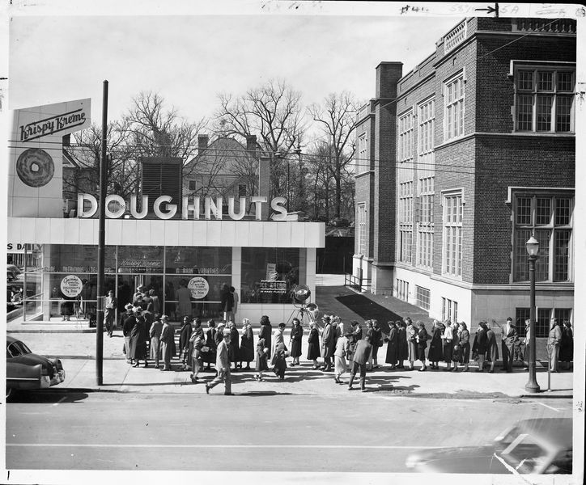
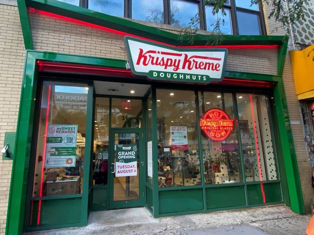

Where it all started.

Vernon Rudolph founded Krispy Kreme on July 13, 1937 in Winston-Salem, North Carolina. He rented a building in Old Salem to make donuts with a secret yeast raised recipe from a New Orleans French chef to be sold by the dozen and initially sold them to grocery stores, but the demand soon led to him changing the sale method to directly to customers on the sidewalk through a window. The dough for the donuts goes through the company's proprietary air-pressurized extruder and gets formed into perfect rings that proof for thirty minutes. The process which they are fried and pass beneath a waterfall of warm sugar glaze was invented by Rudolph's engineers back in the 1960s. Before that, they were hand-glazed in a galvanized wash tub!
